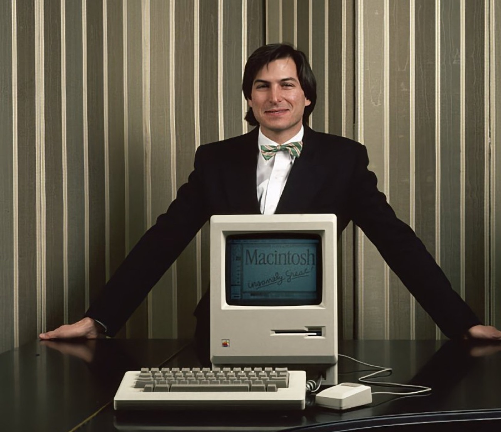

Stiv Jobs
Boshqacha fikrlagan inson
Hayoti, qoidalari va biz undan nimani o‘rganamiz · Shanba, 12:00–14:00
Shahzod Sobirov · Uolter Ayzeksonning “Stiv Jobs” kitobi va kanalimdagi 100 ta post asosida
Bitta odam 6 ta sohani o‘zgartirdi
Shaxsiy kompyuter
Apple II, keyin Macintosh
Animatsion kino
Pixar studiyasi, “Toy Story”
Musiqa
iPod pleyeri va iTunes do‘koni
Telefon
iPhone: sensorli ekranli smartfon
Planshet
iPad
Raqamli kitob
iBooks elektron kitob do‘koni
Bugungi savol: u qanday odam edi va biz undan nimani o‘rganamiz?
Nega aynan Stiv Jobs?
“Kecha Uolter Ayzeksonning “Stiv Jobs” kitobini sotib oldim. Menga o‘zimdan ham aqlliroq odamning yordami va maslahati kerak. Shuning uchun shunday kitoblarni o‘qib boraman.”
@shahzod_sobirov · 08.09.2019
Kitob chiqdi. Uni yozishni Jobsning o‘zi so‘ragan
Jobsning o‘zi bilan suhbat va yuzdan ortiq guvoh
post kanalimda Jobs haqida, 2019–2026
2 soat, 3 qism, 4 ta amaliyot
Hayot yo‘li
Garajdan dunyoning eng qimmat kompaniyasigacha. Mashq: “nuqtalar”
10 daqiqa
Dam olamiz, suv ichamiz
7 qoida
Telefondan jonli mashq: 12 ta g‘oyadan 4 tasi
Taqdimot san’ati
60 soniyalik Jobs-taqdimot va uy vazifasi
📱 Telefoningizni tayyorlab qo‘ying: mashqlarda kerak bo‘ladi.
Garajdan dunyoning eng qimmat kompaniyasigacha
1955–2011 · 56 yillik hayot, 8 ta bekat
Asrab olingan bola
Yangi oila
San-Fransiskoda tug‘ildi. Chaqaloqligida Pol va Klara Jobslar oilasi asrab oldi. Otasi usta edi va o‘g‘liga qo‘l mehnatini o‘rgatdi.
Bitta qo‘ng‘iroq
HP kompaniyasi asoschisi Bill Xyulettga o‘zi qo‘ng‘iroq qilib, detal so‘radi. Detalni ham, yozgi ishni ham oldi.
Kollejni tashladi
Bir semestrdan keyin o‘qishni tashladi, lekin o‘zini qiziqtirgan darslarga, jumladan kalligrafiyaga qatnashda davom etdi.
“Tanimagan odamlaringga qo‘ng‘iroq qilib, taklif qilishdan uyalma.” POST #179
4 kecha va bitta o‘yin: Breakout
19 yoshli Jobs o‘yin kompaniyasi Atari’ga texnik bo‘lib ishga kirdi.
Rahbar Nolan Bushnell yangi o‘yin so‘radi: to‘p g‘ishtlarni urib sindiradi. Qancha kam mikrosxema ishlatilsa, shuncha katta bonus.
Jobs uni o‘zi yasay olmasdi. Do‘sti Stiv Voznyak kunduzi HP’da ishlab, 4 kecha uxlamay o‘yinni loyihaladi.
Jobs g‘oyani topdi va topshiriqni oldi, Voznyak yasadi. Keyin Apple ham aynan shu juftlikdan tug‘ildi.
Ikki Stiv va bitta garaj
Jobs (21 yosh) va Stiv Voznyak (25 yosh) Apple kompaniyasiga asos soldi
Jobs mikroavtobusini, Voznyak kalkulyatorini sotdi: taxminan 1 300 dollar
Birinchi mijoz: do‘kon 500 dollardan 50 ta kompyuter so‘radi
Apple I narxi. Voznyak takrorlanuvchi raqamlarni yoqtirgani uchun shunday qo‘yilgan YANGI
Muhandis: kompyuterni yaratdi
G‘oya, sotuv, biznes

Qaroqchilar yasagan kompyuter
“Harbiy flotga qo‘shilgandan ko‘ra qaroqchi bo‘lgan yaxshi.”
“Haqiqiy rassomlar o‘z asariga imzo qo‘yadi.”
Macintosh sotuvga chiqdi: sichqoncha va oynali ekranni oddiy odamlar uyiga olib kirdi. Ikki kun oldin “1984” nomli reklama roligi Super Bowl paytida bir marta ko‘rsatildi va reklama tarixiga kirdi. YANGI

Jobs ham ko‘p marta yiqilgan
Apple III
Ventilyatorsiz bo‘lsin, dedi Jobs. Kompyuter qizib ketib, buzilaverdi.
Lisa
9 995 dollar turardi. Juda qimmat edi, kam sotildi.
NeXT Computer
Chiroyli qora kub, lekin 6 500 dollar. Maktab va universitetlar ololmadi.
ROKR telefoni
Motorola bilan qilingan iTunes telefoni. Jobsning o‘zi ham yoqtirmadi. 2 yildan keyin iPhone chiqdi.
Har bir yiqilish keyingi g‘alabaga dars bo‘ldi. Muvaffaqiyatsizlik — bu tajriba, oxiri emas.
30 yoshida o‘z kompaniyasidan haydaldi
NeXT
Yangi kompyuter kompaniyasi. Logotipiga 100 000 dollar to‘ladi
Pixar
Kichik grafika studiyasini 10 mln dollarga sotib oldi
“Toy Story”
Dunyodagi birinchi to‘liq kompyuterda yaratilgan multfilm
“Apple’dan haydalishim menga yuz bergan eng yaxshi voqea bo‘lib chiqdi.”
Stenford nutqi, 2005
Bankrotlik yoqasidagi Apple’ga qaytish
mahsulot turi qisqartirildi
Jobsning yillik maoshi
yangi reklama kampaniyasi (Think Different)
“Dunyoni o‘zgartira olaman deb o‘ylaydigan darajada telba odamlar aslida uni o‘zgartiradi.”
Apple reklamasi, 1997
Nega har kuni bir xil kiyim?
Qora sviter, jinsi shim, krossovka. Jobs dizayner Issey Miyakega shunday sviterdan 100 ga yaqin buyurtma bergan.
Fokus
Har kuni ertalab “nima kiyaman?” deb o‘ylamaslik. Kuch muhim qarorlarga qoladi.
Brend
Sahnada uni uzoqdan ham tanib olishardi. Kiyim ham “oddiylik” qoidasining bir qismi edi.
Cho‘ntagingizdagi inqilob
iPod: “1 000 ta qo‘shiq cho‘ntagingizda”
iTunes: bir haftaga yetmay 1 million qo‘shiq sotildi
iPhone: pleyer, telefon va internet bitta qurilmada
iPad: kompyuter bilan telefon orasidagi yangi qurilma
56 yillik hayot
Kasalligi sabab rahbarlikni Tim Kukka topshirdi
Uzoq kasallikdan so‘ng vafot etdi
Garajda boshlangan Apple dunyodagi eng qimmat kompaniyaga aylandi
Dunyoda 2,35 milliarddan ortiq faol Apple qurilmasi bor (2025)
“U boshqacha o‘ylashga jur’at qildi. Dunyoni o‘zgartira olishiga ishonadigan darajada dadil edi va buni uddalaydigan iste’dodga ega edi.”
Barak Obama, AQSH Prezidenti
Uchta hikoya
12-iyun 2005. Jobs Stenford universiteti bitiruvchilari oldida chiqdi: “Bugun sizlarga hayotimdan uchta hikoya aytib bermoqchiman. Hammasi shu. Faqat uchta hikoya.”
Nuqtalarni birlashtirish
Bugun foydasiz tuyulgan narsa ertaga eng kerakli bo‘lib chiqishi mumkin
Sevgi va yo‘qotish
Haydalganidan keyin ham sevgan ishini davom ettirdi
Vaqt cheklangan
Birovning emas, o‘z hayotingni yasha
Nuqtalarni birlashtirish
Kalligrafiya darsi. O‘shanda hech qanday foydasi yo‘qdek edi
Macintosh: chiroyli shriftlarga ega birinchi kompyuter
“Nuqtalarni oldinga qarab birlashtira olmaysiz, faqat orqaga qarab. Ular kelajakda qandaydir birlashishiga ishonishingiz kerak.”
Hayotingizdagi 3 ta “nuqta”ni yozing: sevimli mashg‘ulot, qiyin voqea, kutilmagan dars. Ular kelajakda qanday birlashishi mumkin?
Sevgan ishingni qil, vaqt cheklangan
“Buyuk ish qilishning yagona yo‘li — qilayotgan ishingni sevish. Hali topmagan bo‘lsang, izlashda davom et. Kelishib qolma.”
“Agar bugun hayotimning oxirgi kuni bo‘lsa, bugun qilmoqchi bo‘lgan ishimni qilgan bo‘larmidim?”
“Vaqtingiz cheklangan. Uni birovning hayotini yashab isrof qilmang.”
Och bo‘l. Nodon bo‘l.
10 daqiqa
Qaytgach: Jobsning 7 qoidasi va telefondan jonli mashq. Telefoningizni quvvatlab oling.
Jobsning 7 qoidasi va bitta ogohlantirish
Oddiylik · Fokus · Sifat · Jamoa · Mijoz · Chorraha · Pul
Oddiylik — eng yuksak donolik
“Oddiylik — eng yuksak donolik.”
Apple’ning 1977-yilgi birinchi reklama broshyurasidagi shior
“Dizayn — bu faqat tashqi ko‘rinish emas. Dizayn — bu narsa qanday ishlashi.”
Stiv Jobs, 2003
“Muammoni yechishni boshlaganda avval murakkab yechimlar keladi va ko‘pchilik shu yerda to‘xtaydi. Piyozni artgandek qatlamma-qatlam davom etsangiz, eng oddiy yechimga yetasiz.” Stiv Jobs, 2006
Misol: iPod’da yuzlab tugma o‘rniga bitta g‘ildirak. iPhone’da klaviatura o‘rniga bitta ekran. YANGI
Fokus — bu “yo‘q” deyish
1997: o‘nlab model o‘rniga 4 ta. Jobs doskaga shu jadvalni chizgan
“Nimani qilish kerakligini tushunish muhim. Lekin nimani qilmaslik kerakligini tushunish undan ham muhim.”
Stiv Jobs
12 ta g‘oyadan faqat 4 tasi qoladi
O‘quvchilar uchun maktab ilovasi. Jamoangiz 12 ta funksiya taklif qildi. Faqat 4 tasini tanlang, qolgan 8 tasiga “yo‘q” deng.
Javoblar shu yerda jonli chiqadi.
Skanerlang yoki oching:
Jamoada 4 tasini tanlang va yuboring
2 jamoa aytadi: nimaga “yo‘q” dedingiz va nega?
Orqa tomon ham sifatli bo‘lsin
Otasi shkaf va devor yasaganda orqa tomonini ham old tomonidek chiroyli qilgan: “Hech kim ko‘rmasa ham, o‘zing bilasan.”
Jobs kompyuter ichidagi platani ham chiroyli qilishni talab qilgan, garchi uni deyarli hech kim ochib ko‘rmasa ham.
Apple mahsulot qutisini ochish ham o‘ziga xos tajriba bo‘lishi uchun qadoqqa ham alohida e’tibor bergan.
“Hech kim ko‘rmaydigan narsani ham yaxshilab bajar.” #166
Faqat eng kuchlilar bilan ishla
“Aqlli odamlarni ishga olib, keyin ularga nima qilishni o‘rgatishning ma’nosi yo‘q. Biz aqlli odamlarni bizga nima qilish kerakligini aytishlari uchun yollaymiz.”
Stiv Jobs · #452
Kuchli odam o‘zidan kuchliroqni yollaydi. O‘rtacha odam o‘zidan kuchsizini. Jamoa shunday pasayib ketadi.
O‘z fikrida turadiganlar
“Kreativ va kerak bo‘lsa o‘z aytganida turib oladigan aqlli odamlarni tanlang.” (#223)
Mijozga kelajakni ko‘rsat
“Odamlar nima xohlashini siz ko‘rsatmaguningizcha bilishmaydi.” Stiv Jobs, 1998
Apple’ning marketing falsafasi, 1977 (Mayk Markkula yozgan)
Hamdardlik
Mijozning hissini boshqalardan yaxshiroq tushun
Fokus
Ikkinchi darajali ishlarni chetga surib qo‘y
Birinchi taassurot
Odamlar kitobga muqovasiga qarab baho beradi
Texnologiya va san’at chorrahasi
“Men o‘zimdagi barcha texnologiyalarni Suqrot bilan bir kunlik suhbatga almashgan bo‘lardim.”
Stiv Jobs, 2001 · #1572
Aql uchun velosiped
Harakatda eng tejamkor jonzot kondor burguti. Lekin velosipeddagi odam undan ham o‘zib ketadi. Jobs uchun kompyuter — aql uchun velosiped.
Maqsad pul emas
“Qabristondagi eng boy odam bo‘lish men uchun muhim emas. Kechasi yotib, ‘Bugun ajoyib ish qildik’ deya olish muhim.”
Stiv Jobs, 1993
“Maqsad raqobatchidan o‘zib ketish yoki ko‘proq pul topish emas. Maqsad — eng zo‘r mahsulotni yaratish.”
#216
“Hech qachon boyib ketish maqsadida kompaniya tuzmang. Maqsad — o‘zingiz ishongan narsa va uzoq yashaydigan kompaniya.”
#791
Nimani olamiz, nimani olmaymiz
Fokus va oddiylik
Sifatga talabchanlik
Ishiga muhabbat
Yiqilgandan keyin turish
Katta orzu qilish jasorati
Odamlarni haqorat qilish, “galvars” deb atash
Sabrsizlik va keskin kayfiyat
Haqiqatni inkor etish
Do‘stdan pulni yashirish YANGI
Atari Breakout uchun katta bonus olgan, Voznyakka esa kichik ulush bergan. Voznyak buni yillar o‘tib bilgan (raqamlar manbalarda turlicha).
“Reallikni buzib ko‘rsatish rag‘bat beradi, lekin reallik keyin javob zarbasini beradi.” Stiv Jobs, #242
Uchta qurilma emas, bitta qurilma
“Bugun uchta inqilobiy mahsulot taqdim qilamiz: pleyer, telefon va internet qurilmasi.”
Uch so‘zni qayta-qayta takrorladi. Zal asta-sekin tushuna boshladi.
“Bular uchta alohida qurilma emas. Bu bitta qurilma. Biz uni iPhone deb ataymiz.”
Jobs qanday taqdimot qilardi
Bitta sarlavha jumla: “1 000 qo‘shiq cho‘ntagingizda”
Avval muammo: odamlarni nima qiynayapti
Uchlik qoidasi: hammasi 3 ta qismda
Slaydda kam so‘z: bitta rasm, bitta fikr, chapdagi suratdagidek
“Yana bir narsa...”: oxirida kutilmagan sovg‘a
60 soniyalik Jobs-taqdimot
Jamoangiz buyumi: Ruchka · Suv shishasi · Ryukzak · Daftar · Soat · Kalkulyator
Muammo
“Hammamiz ... dan charchaganmiz”
Sarlavha
Bitta esda qoladigan jumla
3 ta afzallik
Xususiyat emas, odam uchun foyda
“Yana bir narsa...”
Kutilmagan xususiyat
Stiv Jobsdan 3 saboq
Oddiy qil va fokusda bo‘l: “yo‘q” deyishni o‘rgan.
Hech kim ko‘rmaydigan joyni ham sifatli qil.
Yiqilsang tur: nuqtalar keyin birlashadi.
Yana bir narsa...
One more thing
Atari topshirig‘i
1975-yilda Atari Jobsga o‘yin yaratishni topshirdi. Jobs g‘oyani berdi, Voznyak uni yasadi. Endi navbat sizda: jamoangiz bilan yangi o‘yin g‘oyasini o‘ylab toping.
O‘yin nomi
O‘yinchi nima qiladi (1–2 jumla)
“Voy!” xususiyati: nega qiziq?
Kim “Jobs”, kim “Voznyak”?
Muddat: keyingi shanba, 10-oktabr. Keyingi mashg‘ulotda g‘oyalarni ekranda ko‘rib, eng zo‘riga ovoz beramiz.
Skanerlang yoki oching:
Och bo‘l.
Nodon bo‘l.
Stay hungry. Stay foolish.
O‘qish uchun: Uolter Ayzekson, “Stiv Jobs” (2011)
DATA · Bilimga to‘ldiramiz